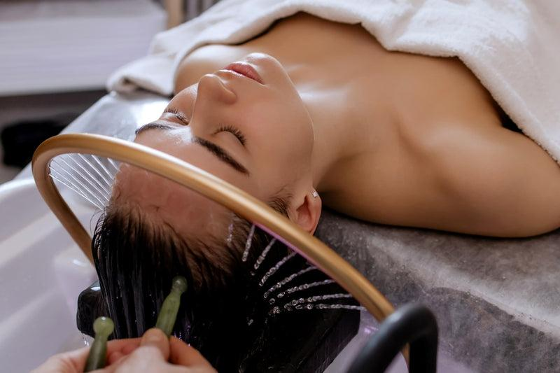
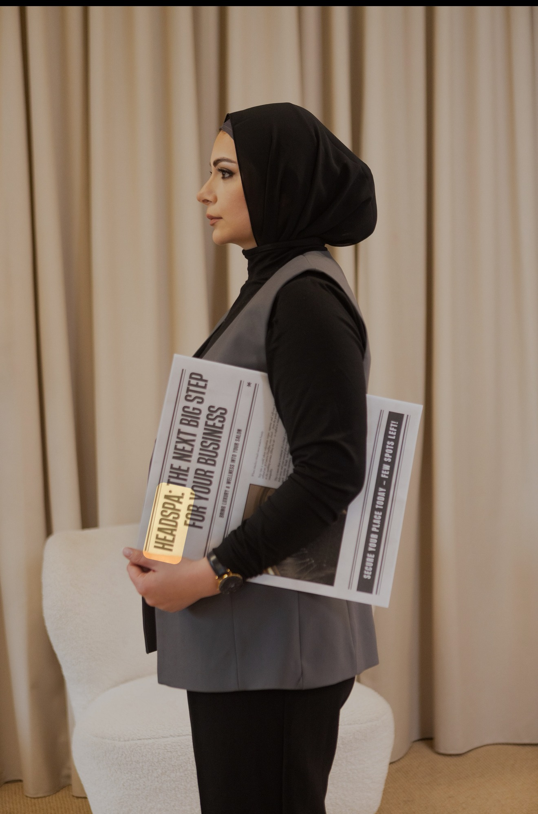
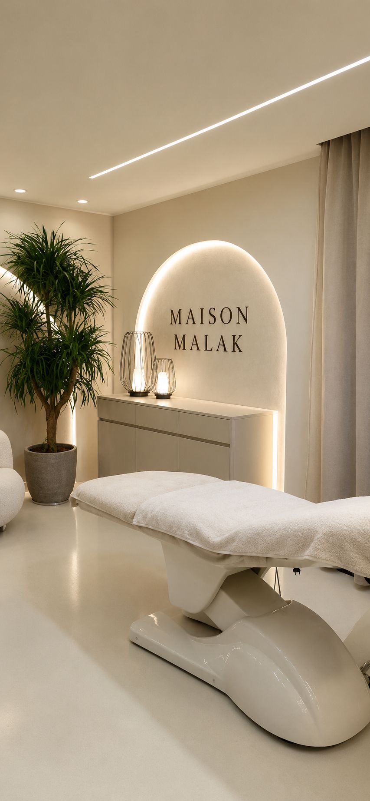
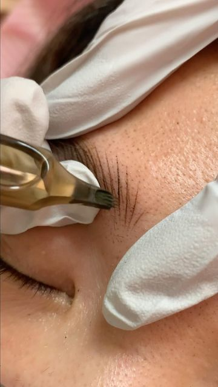
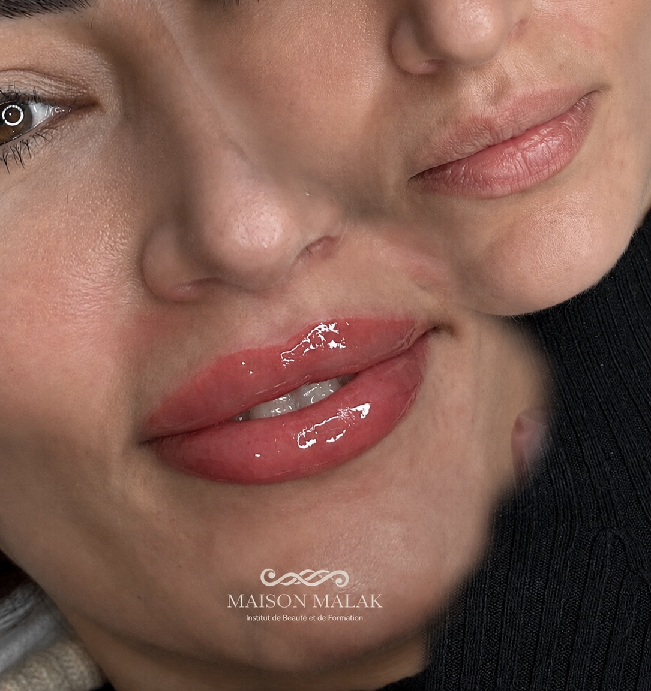
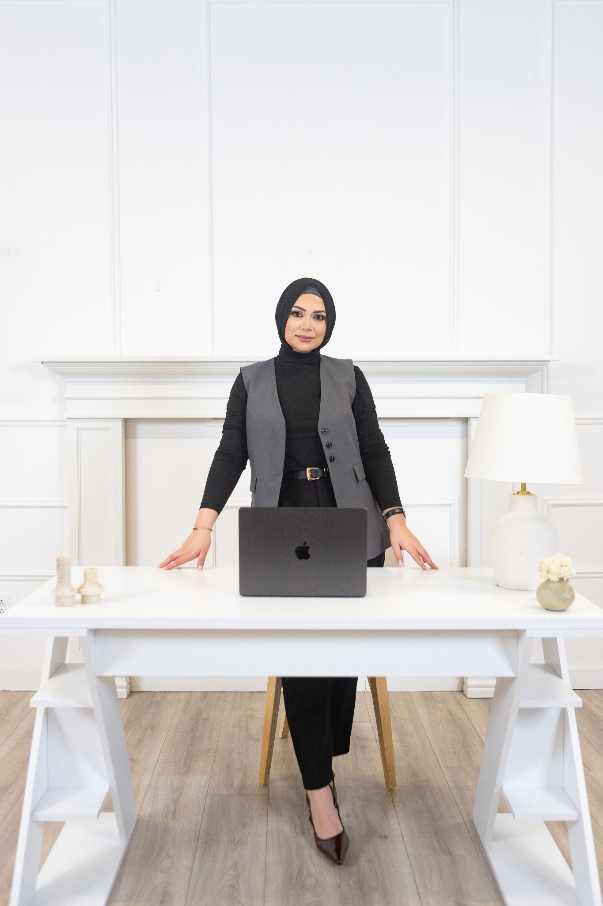
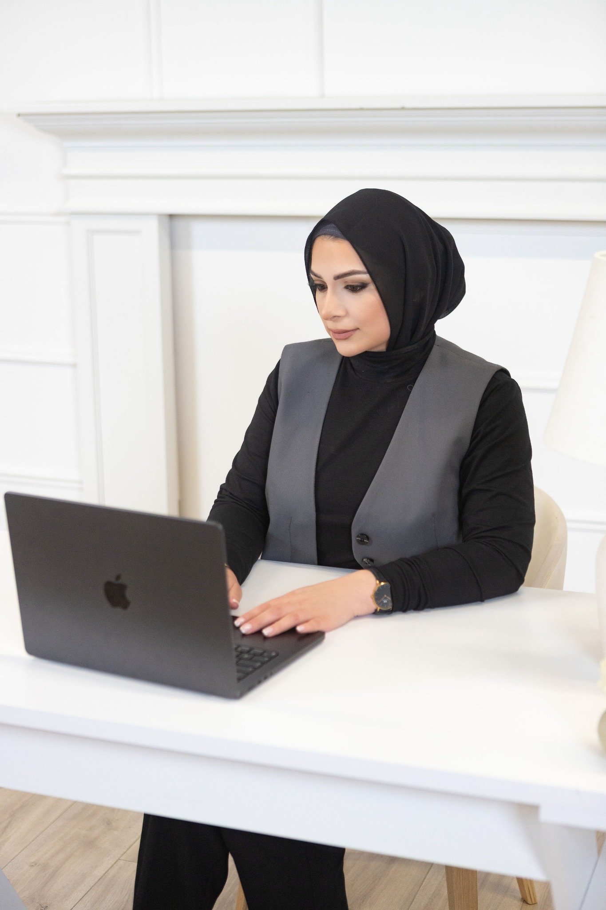

Head Spa
Rituel du cuir chevelu, massage relaxant et soin capillaire.
à partir de 99$
Un univers féminin, luxueux et professionnel où la détente rencontre les résultats — Head Spa, soins visage, beauté du regard, maquillage permanent et formations certifiées.

Des soins pensés pour sublimer le visage, les cheveux et l’expérience client.

Rituel du cuir chevelu, massage relaxant et soin capillaire.

Facials, dermaplaning, microdermabrasion, microneedling et peeling.

Sourcils, cils, lip blush, microblading, nano brows et powder brows.

Une couleur douce, lumineuse et harmonieuse pour sublimer les lèvres naturellement.
Des sourcils structurés et raffinés, adaptés au visage et au style de chaque cliente.


Je suis Malak, fondatrice de Maison Malaak et spécialiste du regard depuis plus de 8 ans. Esthéticienne certifiée et artiste en maquillage permanent, je me consacre à révéler la beauté naturelle de chaque femme à travers des soins raffinés, précis et personnalisés.
Passionnée par l’esthétique, le bien-être et l’art du détail, j’ai créé Maison Malaak comme un espace où élégance, douceur et expertise se rencontrent. Chaque soin est pensé pour offrir une expérience apaisante et haut de gamme, tout en mettant en valeur les traits naturels du visage avec harmonie et subtilité.
Mon objectif est simple : vous faire sentir belle, confiante et rayonnante, dans une ambiance chaleureuse où chaque cliente se sent écoutée, valorisée et pleinement prise en charge.

Des formations professionnelles pour lancer ou développer une carrière dans la beauté : Head Spa, PMU, soins visage et techniques du regard.
Un environnement calme, propre et très professionnel. On se sent prise en charge dès l'arrivée.
Expérience Head SpaUn résultat naturel et raffiné, avec une attention exceptionnelle aux détails.
Beauté du regardUne ambiance luxueuse et féminine, parfaite pour prendre un vrai moment pour soi.
Soins visage